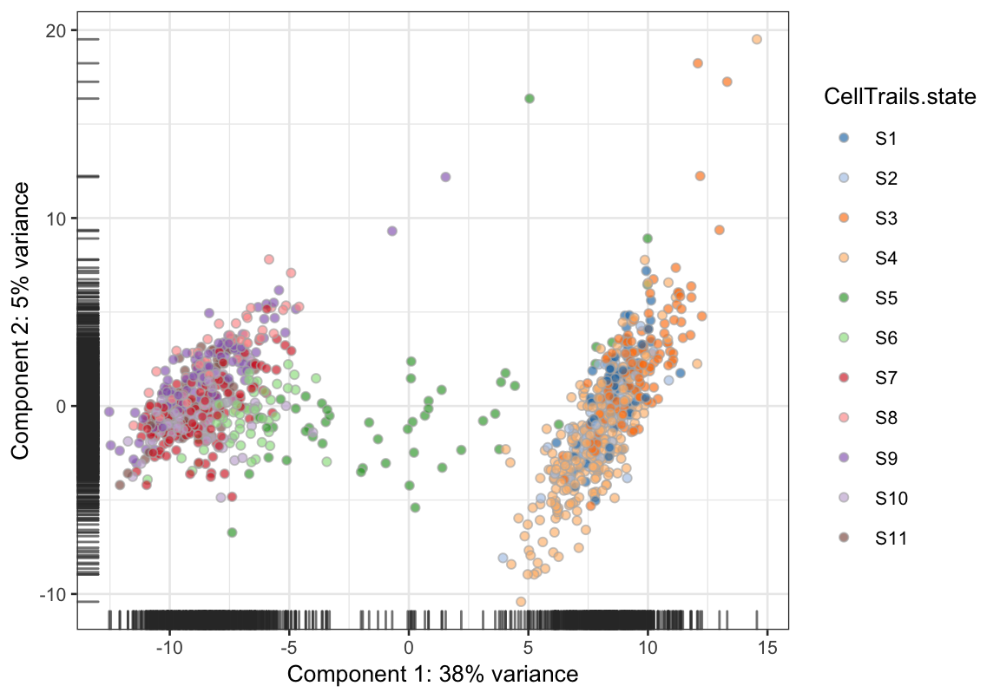
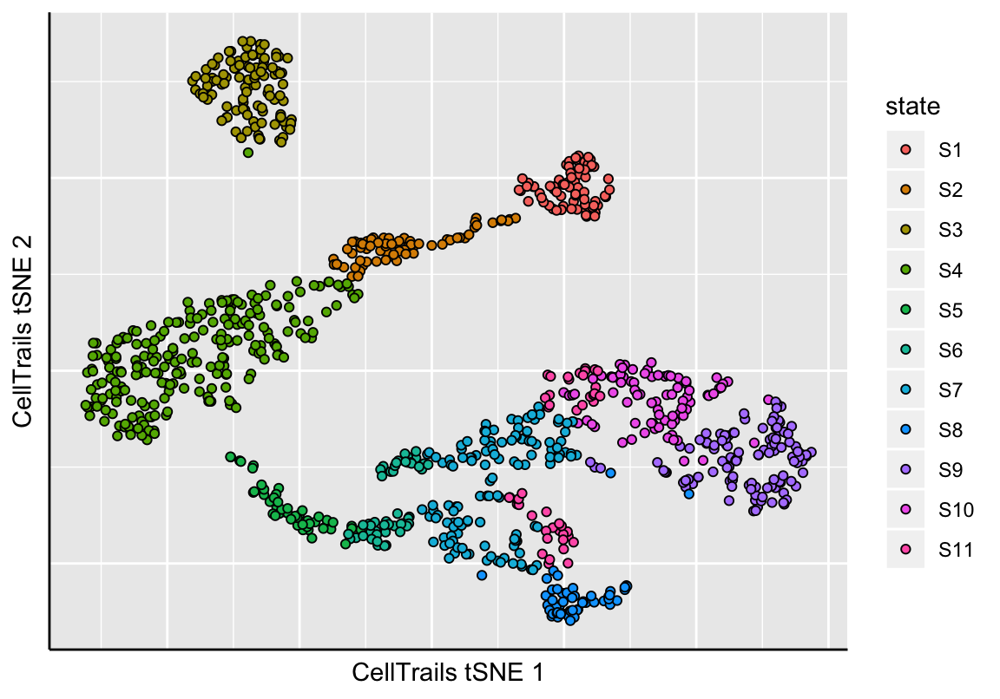
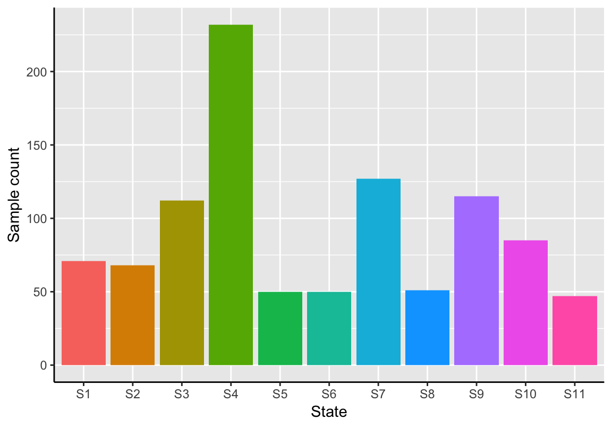
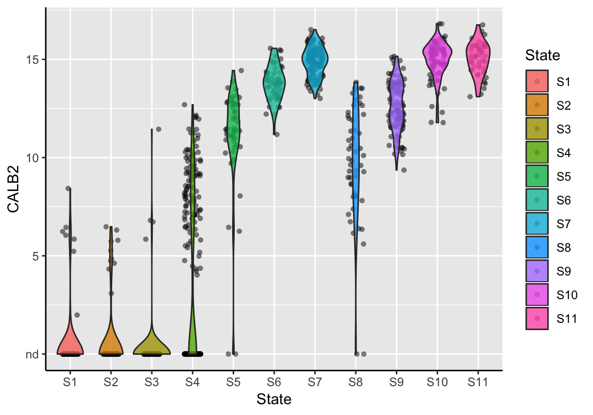

Chapter 5 Clustering
5.1 Hierarchical Spectral Clustering
To identify cellular subpopulations, CellTrails performs hierarchical clustering via minimization of a square error criterion (and 1963) in the lower-dimensional space. To determine the number of clusters, CellTrails conducts an unsupervised post-hoc analysis. Here, it is assumed that differential expression of assayed features determines distinct cellular stages. Hierarchical clustering in the latent space generates a cluster dendrogram. CellTrails makes use of this information and identifies the maximal fragmentation of the data space, i.e. the lowest cutting height in the clustering dendrogram that ensures that the resulting clusters contain at least a certain fraction of samples. Then, processing from this height towards the root, CellTrails iteratively joins siblings if they do not have at least a certain number of differentially expressed features. Statistical significance is tested by means of a two-sample non-parametric linear rank test accounting for censored values (R. Peto and Peto 1972). The null hypothesis is rejected using the Benjamini-Hochberg (Benjamini and Hochberg 1995) procedure for a given significance level. The number of clusters can impact the outcome of the trajectory reconstruction and therefore, this step might require some parameter tuning depending on the input data (for more information on the parameters call ?findStates).
cl <- findStates(exBundle, min_size=0.01, min_feat=5, max_pval=1e-4, min_fc=2)## Initialized 25 clusters with a minimum size of 10 samples each.## Performing post-hoc test ...## Found 11 states.head(cl)## [1] S7 S1 S4 S11 S9 S8
## Levels: S1 S2 S3 S4 S5 S6 S7 S8 S9 S10 S11The clusters identified by CellTrails are referred to as states along the trajectory. The function states can be used to set the clusters to the SingleCellExperiment object.
# Set clusters
states(exBundle) <- clState assignments are stored as sample metainformation and can be either recieved via colData or states. Since CellTrails operates on a SingleCellExperiment object, its results can be easily used by other packages. For example, visualizing a principal component analysis with scater (McCarthy et al. 2017):
## Not run:
##library(scater)
## End(Not run)
# Plot scater PCA with CellTrails cluster information
scater::plotPCA(exBundle, colour_by="CellTrails.state")
Please note that the (Bioconductor) package scater is not part of CellTrails and may be needed to be installed first.
5.2 Using Alternative Methods
Technically, the function states<- allows to set any clustering result to a SingleCellExperiment object. Any numeric, character or factor vector containing the cluster assignments for each sample is accepted.
5.3 Visualization
As before, we can visualize the approximated lower-dimensional manifold and colorize each sample by its assigned state.
# States are now listed as phenotype
phenoNames(exBundle)## [1] "fm143" "origin" "state"# Show manifold
plotManifold(exBundle, color_by="phenoName", name="state")
The function plotStateSize generates a barplot showing the absolute sizes of each state.
plotStateSize(exBundle)
Further, violin plots can be produced showing the expression distribution of a feature per state. Each point displays the feature’s expression value in a single sample. A violine represents a vertically mirrored density plot on each side.
plotStateExpression(exBundle, feature_name="CALB2")
References
and, JH Ward. 1963. “Hierarchical Grouping to Optimize an Objective Function.” Journal of the American Statistical Association 58: 236–44.
Peto, R, and J Peto. 1972. “Asymptotically Efficient Bank Invariant Test Procedures (with Discussion).” Journal of the Royal Statistical Society Series A 135: 185–206.
Benjamini, Y, and Y. Hochberg. 1995. “Controlling the False Discovery Rate: A Practical and Powerful Approach to Multiple Testing.” Journal of the Royal Statistical Society Series B 57: 289–300.
McCarthy, DJ, KR Campbell, ATL Lun, and QF Wills. 2017. “Scater: Pre-Processing, Quality Control, Normalisation and Visualisation of Single-Cell Rna-Seq Data in R.” Bioinformatics 14: 1179–86.